Woodcutting Guide
Introduction
Woodcutting is one of the fan favorites of being the most relaxing skill to train in 2009scape. Fun fact that woodcutting is also Ceikry's favorite skill to train inside of 2009scape.
In this guide we will be using both player made guides and just pure knowledge of how the game worked and what is inside of 2009scape. This page is a work in progress
like the game itself. More content will be added to the game so more will be added to this Wiki in time.
Axe or Hatchets?
When starting the server you will also start with a bronze axe/hatchet but you will not want to stick with that one or if you happen to lose this one this guide will show you where to get a new one.
| Tools |
Level Required |
Obtained from |
| 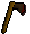Bronze Axe | 1 |
Can buy from Bob's Brilliant axes or for free from the chicken coop in Lumby. |
| 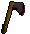Iron Axe | 1 |
Can buy from Bob's Brilliant axes or for free from varrock sewers. |
![[Image: Woodcutting]](../../img/main/kbase/items/axes/steel_axe.gif "Woodcutting") Steel Axe Steel Axe |
6 |
Can buy from Bob's Brilliant axes or can make it using the smithing skill. |
| 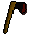Black Axe | 6 |
Can get them as a drop from black demons, the kbd or clue scrolls. |
| 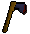Mith Axe | 21 |
Can make them through smithing or killing various monsters. |
| 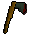Addy Axe | 31 |
Can get them through smithing or killing various monsters including the enchanted forest. |
![[Image: Woodcutting]](../../img/main/kbase/items/axes/rune_axe.gif "Woodcutting") Rune Axe Rune Axe |
41 |
Can get them through smithing or killing various monsters including the enchanted forest. |
| 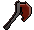Dragon Axe | 61 |
Dropped by the Dagannoth Kings beneath Waterbirth Island. |
| 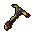Inferno Adze | 61 |
The reward from the All Fired Up mini game. |
Trees
In 2009scape the skill of woodcutting is trained by none other than cutting trees as the name suggests. There are quite a bit added and if any need to be added to this list I will make sure that I will add the rest! If you haven't read up on the hatchets/axes make sure you do so if you're not aware of all the ones in the game.
| Tree |
Level Required |
Experienced Gained |
| 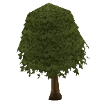Normal Tree | 1 |
Can be found throughout 2009scape and yield 25 experience per log. |
![[Image: Woodcutting]](../../img/main/kbase/items/trees/evergreen_tree.gif "Woodcutting") Evergreen Tree Evergreen Tree |
1 |
Can be found throughout 2009scape and yield 25 experience per log. |
![[Image: Woodcutting]](../../img/main/kbase/items/trees/dead_tree.gif "Woodcutting") Dead Tree Dead Tree |
1 |
Can find these throughout 2009scape but Draynor Manor is an easy place to spot them! They yield 25 experiene per log. |
![[Image: Woodcutting]](../../img/main/kbase/items/trees/oak.gif "Woodcutting") Oak Tree Oak Tree |
15 |
A great spot for oaks are near the seers village bank. They yield 37.5 experience per log. |
| 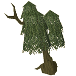Willow Tree | 30 |
Draynor Village is famous for it's willow location but so is Catherby since they are near a bank! They yield 67.5 experience per log. |
![[Image: Woodcutting]](../../img/main/kbase/items/trees/teak.gif "Woodcutting") Teak Tree Teak Tree |
35 |
Can be found in Karamja or Found near the outskirts of Castle Wars. Teak logs yield 85 experience per log. |
| 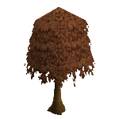Maple Tree | 45 |
Found near the wonderful oaks hidden right behind the seers's bank you can find maples. They yield 100 experience per log. |
![[Image: Woodcutting]](../../img/main/kbase/items/trees/mahogany.gif "Woodcutting") Mahogany Tree Mahogany Tree |
50 |
The logs that make construction go brr can be found in Karamja! They yield a whopping 125 experience per log! |
![[Image: Woodcutting]](../../img/main/kbase/items/trees/yew.gif "Woodcutting") Yew Tree Yew Tree |
60 |
If yew asked for a location for these trees you'd find them on your mini map under the tree icon across 2009scape. They yield 175 experience per log! |
| 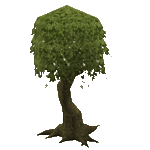Magic Tree | 75 |
The magical tree found across 2009scape that gives the best experience in the era of 2009! Ivy being the fasted. These trees yield 250 experience per log! |
Canoes
A great way to get around the river of lumbridge is to take the canoes. It has super low requirements for such a great method of transportation in an era where transportation meant everything!
| Item |
Level Required |
Location |
| Log | 12 |
Takes you up to the Champions guild and yields 30 woodcutting experience once created. |
| Dugout | 27 |
Takes you up to the Barbarian Village and yields 60 woodcutting experience once created. |
| Stable Dugout | 42 |
Takes you up to Edgeville and yields 90 woodcutting experience once created. |
| Waka | 57 |
Takes you up to the wilderness and yields 150 woodcutting experience once created. |
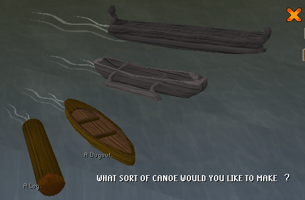
Misc
 Bird's nest
Bird's nest
Are nests that fall out of the tree that carry a variety items from bird eggs, rings, and seeds.
 Beavers
Beavers
Are a part of the beautiful Summoning skill and are the familiar that helps you along with woodcutting. The familiar stays by your side foraging extra logs for you as well as giving you a boost of two woodcutting levels.
Note: If you see something not on this page that currently is in-game please let Summer know.